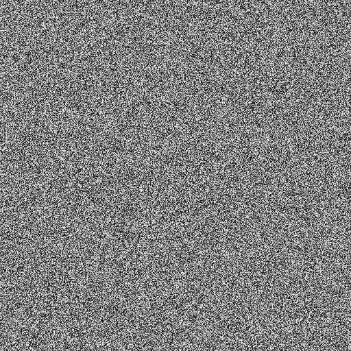
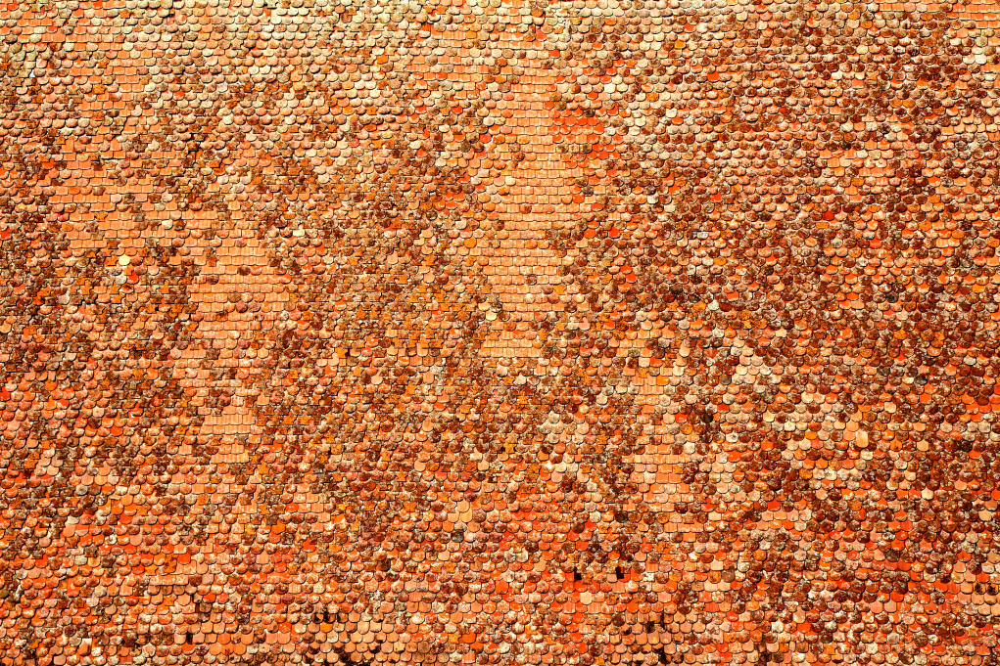
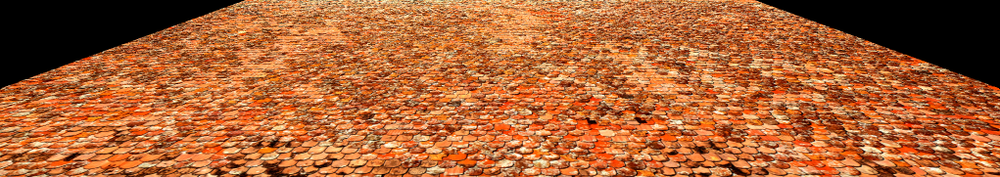
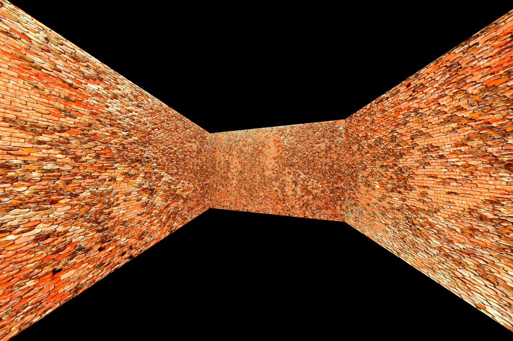

%mavenRepo scijava.public https://maven.scijava.org/content/groups/public
%maven net.imagej:ij:1.53s
%maven mpicbg:mpicbg_:1.4.0
%maven sc.fiji:panorama_:3.0.2
import ij.*;
import ij.process.*;
import java.util.*;
import mpicbg.ij.*;
import mpicbg.ij.integral.*;
import mpicbg.models.*;
import mpicbg.panorama.*;We want to fill images with white noise, so here are two functions to do so.
void fillWhiteNoise(final FloatProcessor ip) {
final var rnd = new Random(0);
final float[] pixels = (float[])ip.getPixels();
for (int i = 0; i < pixels.length; ++i)
pixels[i] = rnd.nextFloat() * 2 - 1;
}
void fillGaussianNoise(final FloatProcessor ip) {
final var rnd = new Random(0);
final float[] pixels = (float[])ip.getPixels();
for (int i = 0; i < pixels.length; ++i)
pixels[i] = (float)rnd.nextGaussian();
}This is the TransformMapping class from mpicbg but with a member source, so we can make and re-use an integral image for all subsequent mappings.
public class PrettyMapping<T extends CoordinateTransform> {
final protected IntegralImage integral;
final protected ImageProcessor source;
final protected T transform;
final public T getTransform(){ return transform; }
private static final IntegralImage integrate(final ImageProcessor ip) {
if (FloatProcessor.class.isInstance(ip))
return new DoubleIntegralImage((FloatProcessor)ip);
else if (ByteProcessor.class.isInstance(ip))
return new LongIntegralImage((ByteProcessor)ip);
else if (ShortProcessor.class.isInstance(ip))
return new LongIntegralImage((ShortProcessor)ip);
else if (ColorProcessor.class.isInstance(ip))
return new LongRGBIntegralImage((ColorProcessor)ip);
else
return null;
}
private static final double squareLength(
final double x0,
final double y0,
final double x1,
final double y1) {
final double dx = x1 - x0;
final double dy = y1 - y0;
return dx * dx + dy * dy;
}
private static final double length(
final double x0,
final double y0,
final double x1,
final double y1) {
return Math.sqrt(squareLength(x0, y0, x1, y1));
}
public PrettyMapping(
final ImageProcessor source,
final T transform) {
this.source = source;
this.transform = transform;
this.integral = integrate(source);
}
public void map(final ImageProcessor target) {
source.setInterpolationMethod(ImageProcessor.BICUBIC);
final double[] t = new double[3];
final int sw = source.getWidth() - 1;
final int sh = source.getHeight() - 1;
final int tw = target.getWidth();
final int th = target.getHeight();
for (int y = 0; y <= th; ++y) {
final double y0 = y - 0.5;
final double y1 = y + 0.5;
for (int x = 0; x <= tw; ++x) {
t[0] = x;
t[1] = y;
t[2] = 1.0;
transform.applyInPlace(t);
final double t0 = t[0];
final double t1 = t[1];
if (t0 >= 0 && t0 <= sw && t1 >= 0 && t1 <= sh) {
final double x0 = x - 0.5;
final double x1 = x + 0.5;
t[0] = x0;
t[1] = y0;
t[2] = 1.0;
transform.applyInPlace(t);
final double x00 = t[0];
final double y00 = t[1];
t[0] = x1;
t[1] = y0;
t[2] = 1.0;
transform.applyInPlace(t);
final double x10 = t[0];
final double y10 = t[1];
t[0] = x0;
t[1] = y1;
t[2] = 1.0;
transform.applyInPlace(t);
final double x01 = t[0];
final double y01 = t[1];
t[0] = x1;
t[1] = y1;
t[2] = 1.0;
transform.applyInPlace(t);
final double x11 = t[0];
final double y11 = t[1];
final double avgHalfLength = (
length(x00, y00, x10, y10) +
length(x10, y10, x11, y11) +
length(x11, y11, x01, y01) +
length(x01, y01, x00, y00)) / 8.0;
if (avgHalfLength > 1) {
final int tx = (int)(t0 + 0.5);
final int ty = (int)(t1 + 0.5);
final int r = (int)(avgHalfLength + 0.5);
final int xMin = Math.max(-1, tx - r - 1);
final int xMax = Math.min(sw, tx + r);
final int yMin = Math.max(-1, ty - r - 1);
final int yMax = Math.min(sh, ty + r);
final float scale = 1.0f / (xMax - xMin) / (yMax - yMin);
target.set(x, y, integral.getScaledSum(xMin, yMin, xMax, yMax, scale));
} else
target.putPixel(x, y, source.getPixelInterpolated(t0, t1));
}
}
}
}
}public class InverseOf implements CoordinateTransform {
protected InverseCoordinateTransform t;
public InverseOf(final InverseCoordinateTransform t) {
this.t = t;
}
public void applyInPlace(final double[] point) {
try { t.applyInverseInPlace(point); }
catch (final NoninvertibleModelException e ) {
display(e);
}
}
public double[] apply(final double[] point) {
final double[] copy = point.clone();
applyInPlace(copy);
return copy;
}
}Let’s make an image and fill it with noise.
var ip = new FloatProcessor(512, 512);
fillWhiteNoise(ip);
ip.setMinAndMax(-1, 1);
ip.getBufferedImage();
ImagePlus imp = IJ.openImage("https://pixy.org/src2/680/6804381.jpg");
var ip = imp.getProcessor();
ip.setMinAndMax(64, 255 - 64);
//ip.getBufferedImage();
var ipScaled = Scale.create(ip).scale(0.4);
Scale.create(ipScaled).scale(0.5).getBufferedImage();
Now we transform this with a perspective transformation.
double w = ipScaled.getWidth();
double h = ipScaled.getHeight();
double d = 500;
var homography = new HomographyModel2D();
homography.fit(
new double[][]{
{d, w - d, -d, w + d},
{0, 0, h - 2 * d, h - 2 * d}},
new double[][]{
{0, w, 0, w},
{0, 0, h, h}},
new double[]{1, 1, 1, 1});
var mapping = new PrettyMapping(ipScaled, homography);
var ip2 = ip.createProcessor((int)w, (int)h - 2 * (int)d);
mapping.map(ip2);
Scale.create(ip2).scale(0.5).getBufferedImage();
var mapping2 = new TransformMapping(homography);
var ip3 = ip.createProcessor((int)w, (int)h - 2 * (int)d);
mapping2.mapInverseInterpolated(ipScaled, ip3);
Scale.create(ip3).scale(0.5).getBufferedImage();
double w = ipScaled.getWidth();
double h = ipScaled.getHeight();
double d = 1000;
var camera = new RectlinearCamera();
camera.setSourceWidth(w - 1);
camera.setSourceHeight(h - 1);
camera.setTargetWidth(w);
camera.setTargetHeight(h);
camera.setF(0.125);
camera.pan(Math.PI * 0.05);
display(camera.getF());
var mapping = new PrettyMapping(ipScaled, new InverseOf(camera));
var ip2 = ip.createProcessor((int)camera.getTargetWidth(), (int)camera.getTargetHeight());
mapping.map(ip2);
camera.pan(-Math.PI / 2);
mapping.map(ip2);
Scale.create(ip2).scale(0.5).getBufferedImage();0.125